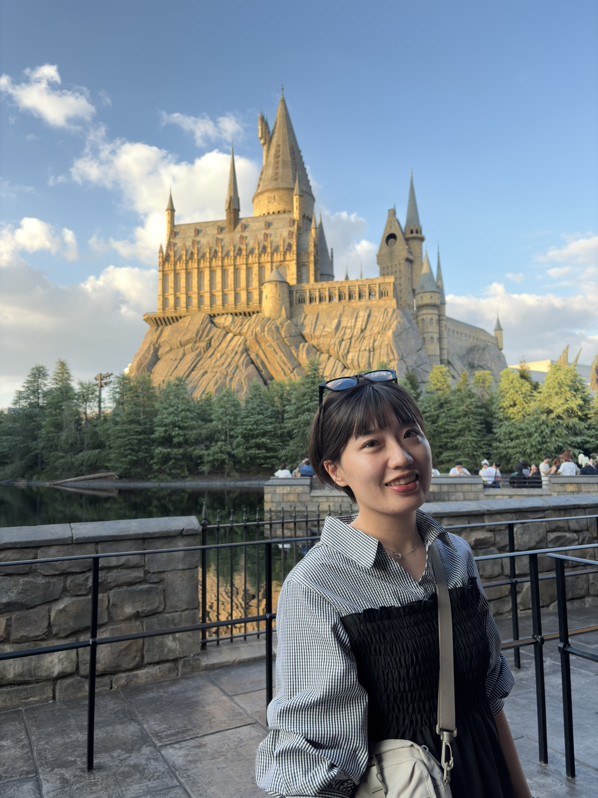
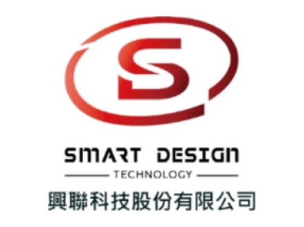
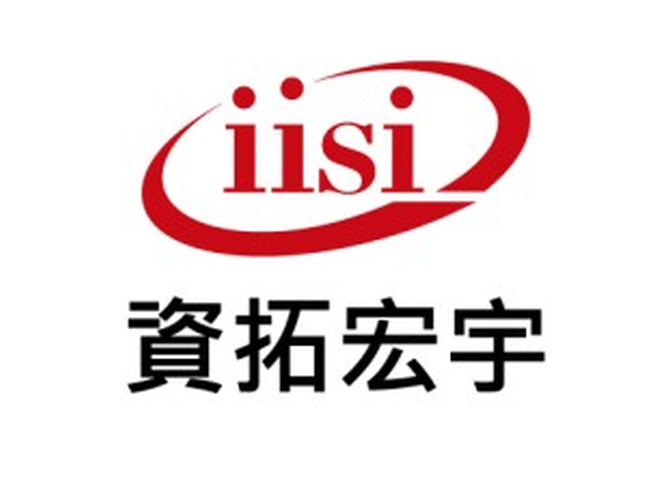
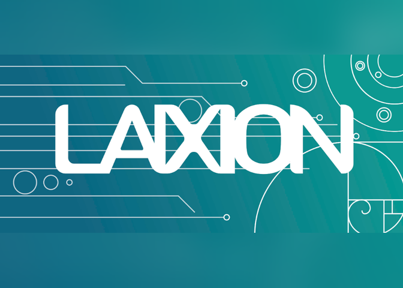

ABOUT ME · 產品設計師｜UI/UX · 台灣台北地區
嗨，我是 Yu Jhen。
產品設計師。
目前深耕汽車產業相關系統與平台設計，具備從需求分析、使用者研究、介面規劃到設計落地的實務經驗。
過去參與車隊管理系統、維運管理平台及企業網站等數位產品專案，擅長將複雜的業務流程與使用者需求轉化為清晰、直覺且具一致性的操作體驗，並透過跨部門溝通與協作，平衡使用者需求、商業目標及技術可行性。
我重視設計背後的邏輯與決策依據，相信好的設計不僅是視覺呈現，更是解決問題、提升效率與創造產品價值的過程。

Experience
產品設計工作經歷
擁有 6 年相關工作經驗
-
2023.04 – 至今

Product Designer
興聯科技股份有限公司負責需求釐清與分析，iTRAQ 車隊管理系統與維運系統的產品企劃，以及 OpenHub 官網、維運後台與洗車中台相關的介面設計；並執行網站易用性測試、用戶訪談、維護設計系統。
-
2022.03 – 2023.04

UI/UX Designer
資拓宏宇國際股份有限公司規劃交通後台管理與監控儀表板，設計無人機與影像辨識後台、道路設備管理介面、縣市即時交通資訊網站，並參與「台北好行」視障者友善服務 App。
-
2021.01 – 2022.02

UI/UX Designer
來享享網路科技股份有限公司負責 Joupeye App 與後台 Web 的流程規劃與優化，產出 Wireframe、UI、Mockup 與 Prototype，並建立與維護 Design Guidelines。
Skills & Education
能力與背景
學歷
國立臺灣師範大學
圖文傳播系 · 碩士（Graphic Communications）
證照與課程
- Google UX Design
- UX‧三刀流 產品體驗設計課程 · 2026
- iPAS 色彩規劃管理師
我的能力
產品規劃AI輔助協作產品設計需求分析與用戶訪談易用性測試Wireframe 與 Prototype設計系統維護